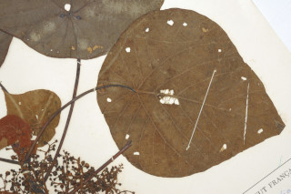
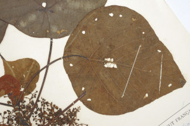

Trees 16 m tall.
16 ಮೀ. ಎತ್ತರದವರೆಗೆ ಬೆಳೆಯುವ ಮರಗಳು.
16 മീറ്റര് വരെ ഉയരമുളള മരങ്ങള്.
மரங்கள் 16 மீ. உயரம் வரை வளரக்கூடியது
Bark grey, smooth.
ತೊಗಟೆ ಬೂದು ಬಣ್ಣದಲ್ಲಿದ್ದು ನಯವಾಗಿರುತ್ತದೆ.
മിനുസമുളള ചാരനിറത്തിലുളള പുറംതൊലി.
மரத்தின் பட்டை சாம்பல் நிறமானது, வழுவழுப்பானது.
Branchlets terete, finely grey pubescent, glaucous.
ಕಿರುಕೊಂಬೆಗಳು ದುಂಡಾಗಿದ್ದು ಸೂಕ್ಷ್ಮವಾದ ಬೂದು ಬಣ್ಣದ ಮೃದುತುಪ್ಪಳದಿಂದ ಕೂಡಿರುತ್ತವೆ ಮತ್ತು ಮಾಸಲು ಬೂದು ಹಸಿರು ಬಣ್ಣ ಹೊಂದಿರುತ್ತವೆ..
നീലരാശികലര്ന്ന ചാര നിറത്തിലുളള നനുത്ത രോമിലമായ, ഉരുണ്ട ഉപശാഖകള്.
சிறிய நுனிக்கிளைகள் குறுக்குவெட்டுத் தோற்றத்தில் வளையமானது, சாம்பல் நிறமான மென்உரோமங்களுடையது. மெழுகு பூசினாற் போல் நீல நிறம் கலந்த பச்சை நிறமானது.
Leaves simple, alternate, spiral; stipules large, caducous; petiole 5-31 cm long ; lamina 13.5-30 x 10.5-18.5 cm, peltate, orbicular-ovate, apex acuminate, base rounded, subcoriaceous, tawny pubescent and resinous yellow glands beneath; nerves 8-9, radiating from the centre.
ಎಲೆಗಳು ಸರಳವಾಗಿದ್ದು ಪರ್ಯಾಯ ಮತ್ತು ಸುತ್ತು ಜೋಡನಾ ವ್ಯವಸ್ಥೆಯಲ್ಲಿರುತ್ತವೆ. ಕಾವಿನೆಲೆಗಳು ದೊಡ್ಡ ಗಾತ್ರದಲ್ಲಿದ್ದು ಉದುರಿ ಹೋಗುವಂತವು;ತೊಟ್ಟುಗಳು 5 – 31 ಸೆಂ.ಮೀ.ವರೆಗಿನ ಉದ್ದವಿರುತ್ತವೆ ಮತ್ತು; ಪತ್ರಗಳು 13.5 -30 X 10.5-18.5 ಸೆಂ. ಮೀ. ವರೆಗಿನ ಗಾತ್ರ ಹೊಂದಿರುತ್ತವೆ ಮತ್ತು ಎಲೆಪತ್ರದ ತಳಭಾಗದ ಮಧ್ಯದಲ್ಲಿತೊಟ್ಟನ್ನು ಹೊಂದಿರುತ್ತವೆ ಹಾಗೂ ವೃತ್ತ – ಅಂಡದ ಆಕಾರ, ಕ್ರಮೇಣವಾಗಿ ಚೂಪಾಗುವ ತುದಿ, ದುಂಡಾದ ಬುಡ ಹೊಂದಿರುತ್ತವೆ;ಪತ್ರದ ಮೇಲ್ಮೈ ಉಪ- ತೊಗಲ್ಲನ್ನೋಲುವ ಮಾದರಿಯಲ್ಲಿದ್ದು ಕಂದುಮಿಶ್ರಿತ ಹಳದಿ ಬಣ್ಣದ ಮೃದು ತುಪ್ಪಳದಿಂದ ಆವೃತವಾಗಿರುತ್ತವೆ ಮತ್ತು ಪತ್ರದ ತಳಭಾಗದಲ್ಲಿ ಹಳದಿ ಬಣ್ಣದ ಅಂಟು ರಸಗ್ರಂಥಿಗಳಿರುತ್ತವೆ ;ಮಧ್ಯನಾಳ ಪತ್ರದ ಮೇಲ್ಭಾಗದಲ್ಲಿ ಉಬ್ಬಿರುತ್ತದೆ;ನಾಳಗಳು 8-9 ಇದ್ದು ಮಧ್ಯದಿಂದ ಹರಡುತ್ತವೆ.
ലഘുവായ ഇലകള് ഏകാന്തരക്രമത്തില് സര്പ്പിളമായി അടുക്കിയതാണ്; വലിയ അനുപര്ണ്ണങ്ങള് നേരത്തേ കൊഴിഞ്ഞ് പോകുന്നതാണ്, ഇലഞെട്ടിന് 5 സെ.മീ മുതല് 31 സെ.മീ വരെ നീളം; പത്രഫലകത്തിന് 13.5 സെ.മീ മുതല് 30 സെ.മീ വരെ നീളവും 10.5 സെ.മീ മുതല് 18.5 സെ.മീ വരെ വീതിയും, പെല്ട്ടേറ്റുമാണ്, ആകൃതി വൃത്താകാരം-അണ്ഡാകാരം, ദീര്ഘപത്രാഗ്രം, പത്രാധാരം വൃത്താകാരത്തിലാണ്, ഉപചര്മ്മില പ്രകൃതം, കീഴെ കരുവാളിച്ച നിറത്തിലുളള, നനുത്ത രോമിലവും കൊഴുത്ത സ്രവമുളള മഞ്ഞ ഗ്രന്ഥികള് നിറഞ്ഞതുമാണ്; മധ്യത്തില് നിന്ന് പുറത്തേക്ക് പ്രസരിക്കുന്ന 8 ഓ 9 ഓ ഞരമ്പുകളുണ്ട്.
இலைகள் தனித்தவை, மாற்றுஅடுக்கமானவை, சுழல் போல் அமைந்தது; இலையடிச்செதில் பெரியது, எளிதில் உதிரக்கூடியவை; இலைக்காம்பு 5-31 செ.மீ., நீளமானது; இலை அலகு 13.5-30 X 10.5-18.5 செ.மீ., பெல்டேட், (அலகின் பின்புறத்தில் நடுவில் காம்பு கொண்டது), வட்டவடிவானது (ஆர்பிக்குலார்)-முட்டை வடிவானது, அலகின் நுனி அதிக்கூரியது, அலகின் தளம் வட்டமானது, சப்கோரியேசியஸ், உரோமங்களுடையது; மற்றும் பிசின் (ரெசின்) கொண்ட மஞ்சள் நிறமான சுரப்பிகள் இலையின் அடிப்புறத்திலுடையவை; நரம்புகள் 8-9, இலையின் நடுவிலிருந்து விளிம்பை நோக்கியவாறு காணப்படும்.
Flowers unisexual, dioecious; inflorescence panicle with zigzag branches, bracts linear with large flat glandular appendage; male flowers in clusters per bract; female flowers few per bract.
ಹೂಗಳು ಏಕಲಿಂಗಿಗಳಾಗಿದ್ದು ಪ್ರತ್ಯೇಕ ಸಸ್ಯಗಳಲ್ಲಿರುತ್ತವೆ;ಪುಷ್ಪಮಂಜರಿಗಳು ಪರ್ಯಾಯವಾಗಿ ಎಡಬಲ ಮುರುವುಗಳುಳ್ಳ ಮತ್ತು ಪುನರಾವೃತ್ತಿಯಾಗಿ ಕವಲೊಡೆಯುವ ಮಾದರಿಯವುಗಳಾಗಿರುತ್ತವೆ;ಹೂಗಳ ಪತ್ರಕಗಳು ರೇಖಾತ್ಮಕವಾಗಿದ್ದು ದೊಡ್ಡ ಗಾತ್ರದ ರಸಗ್ರಂಥಿಯುಕ್ತ ಉಪಾಂಗವನ್ನು ಹೊಂದಿರುತ್ತವೆ; ಗಂಡು ಹೂಗಳು ಪ್ರತಿ ಹೂ-ಪತ್ರಕದಲ್ಲಿನ ಗುಚ್ಛಗಳಲ್ಲಿ ಇರುತ್ತವೆ; ಪ್ರತಿ ಹೂ -ಪತ್ರಕ್ಕೆ ಕೆಲವು ಹೆಣ್ಣು ಹೂಗಳನ್ನೊಳಗೊಂಡ ಗುಚ್ಛಗಳು ಇರುತ್ತವೆ.
പൂക്കള് ഏകലിംഗികളാണ്, ഡയീഷ്യസും; പൂങ്കുലകള് വളഞ്ഞുപുളഞ്ഞ തണ്ടുകളുളള പാനിക്കിളുകളാണ്, രേഖീയ സഹപത്രങ്ങള് വലിയ, പരന്ന ഗ്രന്ഥിയുളള അംഗത്തോടു കൂടിയതാണ്; ആണ്പുക്കള് ഓരോ സഹപത്രത്തിലും ഓരോ കൂട്ടമായി ഉണ്ടാകുന്നു; പെണ്പൂക്കള് ഏതാനും എണ്ണം ഓരോ സഹപത്രത്തിലുമുണ്ടാകുന്നു.
மலர்கள் ஓர்பாலானவை; ஈரகம் கொண்டவை; மஞ்சரி பேனிக்கிள் ஆங்கில எழுத்து Z வடிவான கிளைகள் போன்றவை, பூவடிச்செதில் கோட்டு வடிவானது மற்றும் பெரிய தட்டையான சுரப்பியுடையது; ஆண்மலர்கள் கொத்தானவைகளாக ஒர் பூவடிச்செதிலின்று உருவாகக்கூடியது; பெண்மலர்கள் எண்ணிக்கையில் குறைந்தவையாக, ஓர் செதிலில் காணப்படும்.
Capsule, globose; seed 1.
ಸಂಪುಟ ಫಲ ಗೋಳಾಕಾರದಲ್ಲಿದ್ದು ಒಂದು ಬೀಜವನ್ನು ಒಳಗೊಂಡಿರುತ್ತದೆ.
ഒറ്റ വിത്തുമാത്രമുളള കായ ഗോളാകാര കാപ്സ്യൂള് ആണ്.
வெடிகனி (கேப்சூல்), கோளவடிவானது; விதை ஒன்று கொண்டது.
 
